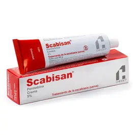
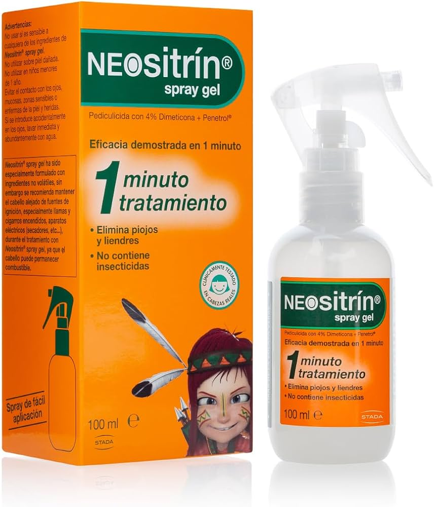
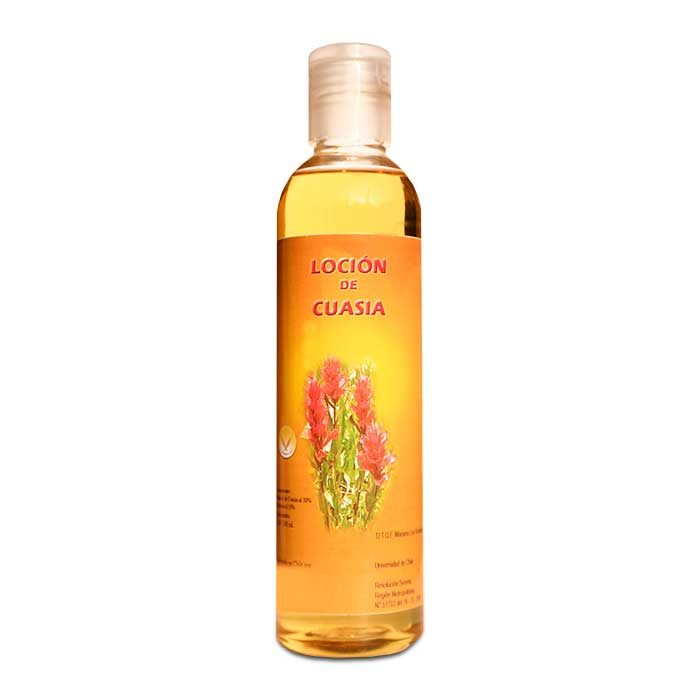

Inhiben canales de sodio del parásito, afectan neurotransmisores (como GABA), o actúan como agentes tóxicos externos (ej. permetrina en el exoesqueleto).
Pediculosis (piojos), escabiosis (sarna), miasis, infestaciones por pulgas o ácaros.
Hipersensibilidad, lactancia (según el agente), piel lesionada o inflamada, bebés menores de 2 meses (en algunos casos).
Aplicación única con repetición a los 7-10 días si es necesario (lociones). Ivermectina oral: dosis única según peso.
PERMETRINA
Sarna:
Crema: una única aplicación sobre la zona afectada, se mantiene durante toda la noche y se aclara abundantemente. El tratamiento puede repetirse al cabo de 2 semanas si se observan ácaros vivos.
Pediculosis
Se efectúa una aplicación única de loción o champú sobre el cuero cabelludo y se deja actuar unos 10 minutos. Después se aclara con abundante agua, se deja secar al aire o con una toalla
El tratamiento puede repetirse 7-10 días después si es necesario
Nota: No aplicar en ojos, mucosas ni piel lesionada.
DIMETICONA
Aplicar sobre el cabello seco hasta empaparlo completamente (cuero cabelludo y todo el largo del cabello). Dejar actuar 8 a 12 horas (o durante la noche). Enjuagar con shampoo. Repetir en 7 días si es necesario.
LOCIÓN DE CUASIA
Aplicar la loción sobre el cabello seco, asegurándose de cubrir completamente el cuero cabelludo y el cabello desde la raíz hasta las puntas. Dejar actuar durante 30 a 60 minutos. Peinar con un peine fino para eliminar piojos y liendres muertos. Enjuagar con agua tibia. Repetir el tratamiento después de 7 días si es necesario.
Irritación local, prurito, ardor, enrojecimiento, reacciones alérgicas cutáneas; toxicidad sistémica rara (ej. ivermectina oral).
Benzodiacepinas (con ivermectina), corticoides tópicos (pueden reducir eficacia), otros irritantes dérmicos
Permetrina: Marca Scabisan
Dimeticona: Marca Neositrín
Loción de Cuasia